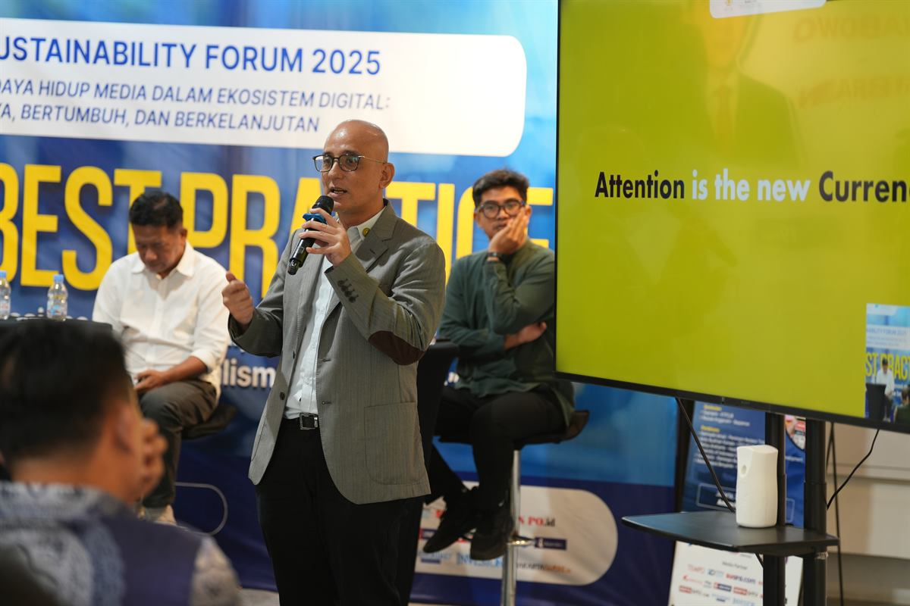
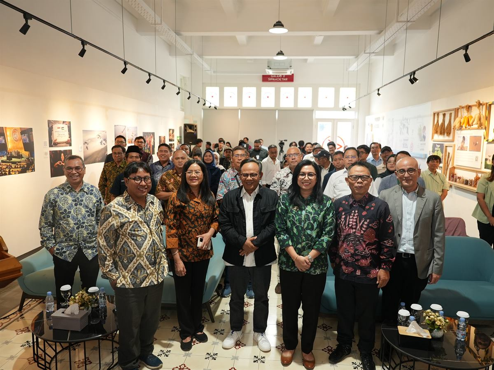
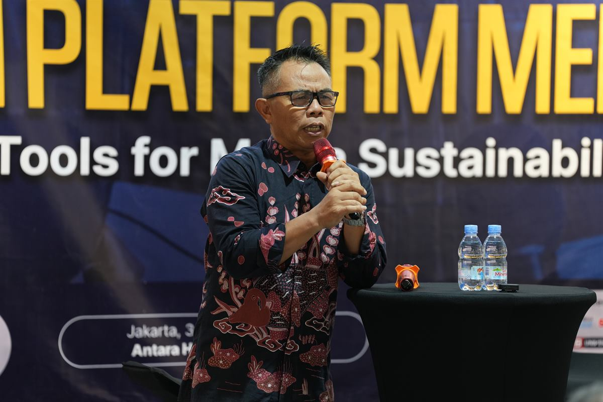
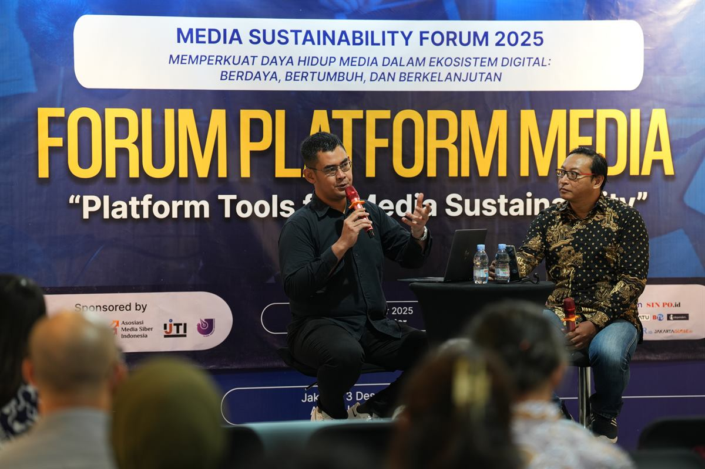
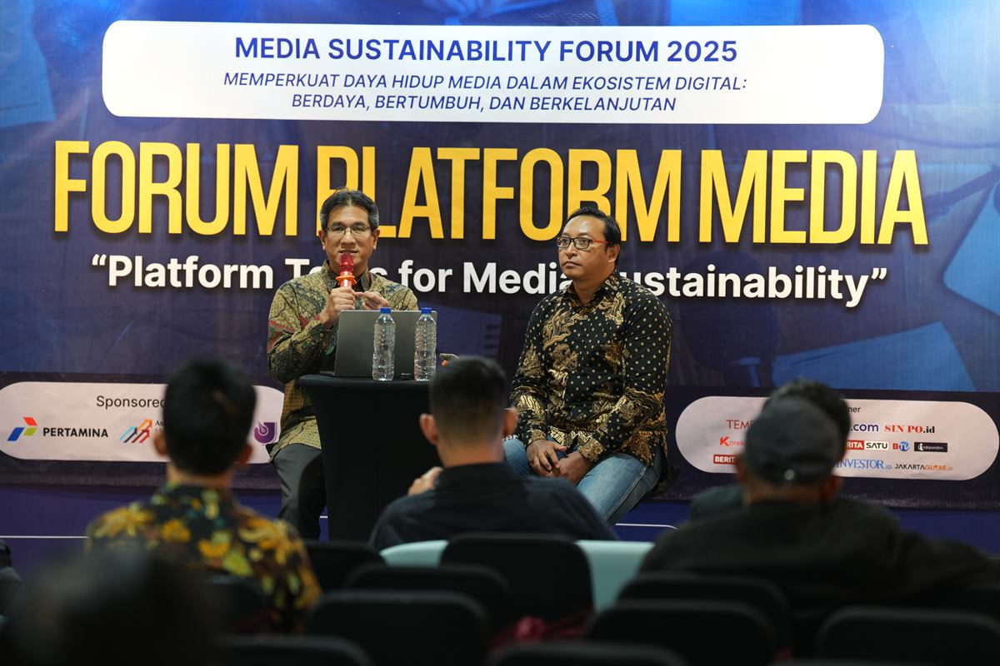
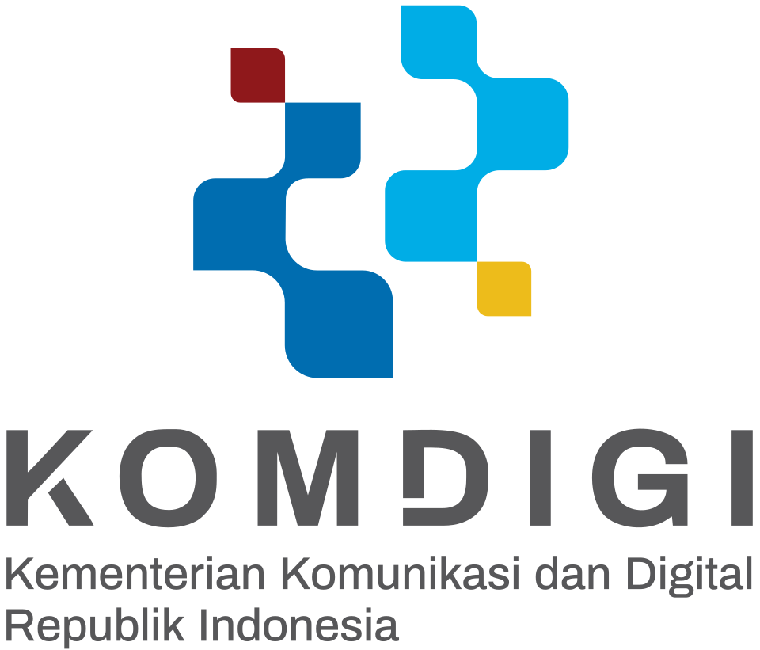

Jurnalisme berkualitas
Kemitraan yang adil
Keberlanjutan media
Publisher Rights
AI & newsroom
Tentang forum
Dari kebijakan ke kemitraan
Media Sustainability Forum adalah ruang dialog nasional untuk keberlanjutan industri media di era AI. MSF 2026 melanjutkan hasil 2025 menuju kemitraan yang adil antara publisher dan platform.
Melibatkan KTP2JB, Dewan Pers, kementerian terkait, serta platform digital global untuk merumuskan arah Publisher Rights dan keberlanjutan ekosistem pers Indonesia.





Sorotan 2026
Tiga capaian yang dituju
- Rekomendasi kebijakan Publisher Rights di era AI.
- Indonesia Media Sustainability Roadmap 2027–2029.
- Jakarta Media & AI Declaration 2026.
Cuplikan rundown
Lihat Selengkapnya- Opening Keynote
- Beyond Search
- Rules & Roadmap
- AI for Journalism
- Platform Media Forum
Pembicara
Suara yang membentuk percakapan
Galeri
MSF 2025
Sponsor
Didukung oleh
Sponsor utama

Sponsor
SPONSOR
SPONSOR
SPONSOR
SPONSOR
SPONSOR
SPONSOR
SPONSOR
SPONSOR
SPONSOR
SPONSOR
SPONSOR
SPONSOR
Daftar MSF 2026 · 2–3 Desember 2026 · Jakarta · Publisher Rights, AI & keberlanjutan media
Daftar Sekarang